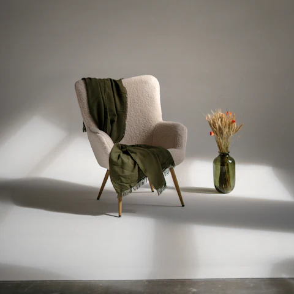
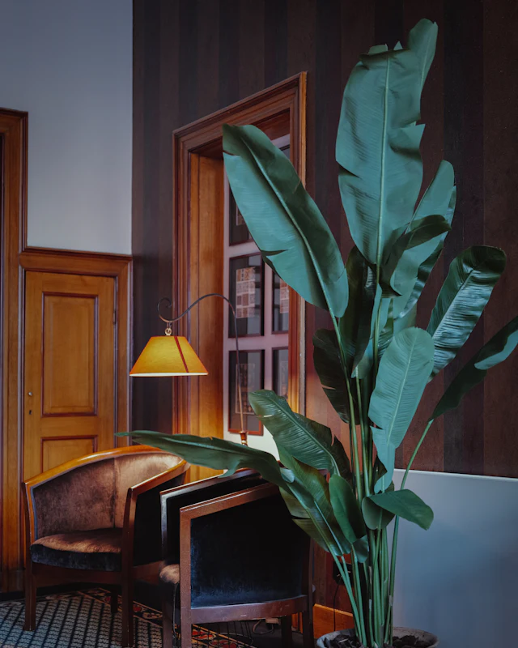

Знакомство
бесплатно20 минут
Обсудим запрос и решим, подходим ли друг другу. Ни к чему не обязывает.
- Видеосвязь или звонок в Telegram
- Можно без камеры
- Без обязательств
Психолог · когнитивно-поведенческая терапия
Разбираемся, что запускает тяжёлое состояние, и шаг за шагом учимся с ним справляться. Понятный план, задания между встречами и заметный результат — обычно за 8–16 встреч.
С чем приходят
Шесть самых частых запросов. Узнали себя хотя бы в одном — значит, есть с чем работать.
Постоянное «а вдруг», напряжение в теле, приступы паники, бессонница от мыслей.
Нет сил и смысла, работа не радует, а отдых больше не восстанавливает.
Внутренний критик, синдром самозванца, трудно сказать «нет» и попросить своё.
Повторяющиеся конфликты, зависимость от чужого мнения, страх близости или одиночества.
Переезд, расставание, потеря, смена работы — когда привычная опора ушла.
Раздражительность, зажатое тело, трудно уснуть вечером и встать утром.
Психолог — не врач: я не ставлю диагнозы и не назначаю лекарства. Если ваш запрос из этого списка, помогу найти профильного специалиста.
Как проходит работа
Никаких «посмотрим, куда вырулит». У работы есть цель, план и понятный финал.
Выбираете формат и время в Telegram-боте. Без звонков и анкет.
Обсуждаем запрос и решаем, подходим ли друг другу. Ни к чему не обязывает.
Раз в неделю разбираем ситуации и пробуем новые способы реагировать. Между встречами — короткие задания.
Отслеживаем прогресс по шкалам и вместе решаем, когда цель достигнута.

Кабинет у м. Чистые пруды: кресло, плед и чай. Онлайн — из любой точки мира.

Обо мне
Психолог-консультант, работаю в когнитивно-поведенческом подходе. Девять лет помогаю взрослым справляться с тревогой, выгоранием и внутренней критикой.
Мой стиль — спокойно и по делу. Смотрим на то, что происходит сейчас: какие мысли и привычки поддерживают проблему и что можно изменить уже на этой неделе. Я объясняю, что и зачем мы делаем, — терапия не должна быть чёрным ящиком.
Цель хорошей терапии — чтобы однажды я стала вам не нужна.
Дипломы и сертификаты покажу на первой встрече.
Форматы и стоимость
Цена фиксированная, без пакетов и предоплат. Не уверены — начните со знакомства.
бесплатно20 минут
Обсудим запрос и решим, подходим ли друг другу. Ни к чему не обязывает.
5 000 ₽50 минут
Видеосвязь из любой точки мира. Нужны наушники и 50 минут, когда вас никто не слышит.
5 500 ₽50 минут
Тихий кабинет у м. Чистые пруды. Вторник, четверг и суббота.
Принципы
Всё, что вы рассказываете, остаётся между нами. Единственное исключение — угроза жизни, и о нём я говорю заранее.
Здесь не стыдят, не торопят и не учат, «как надо жить». Темп — ваш.
Только методы с подтверждённой эффективностью. Никаких экспериментов на вас.
Регулярно разбираю свою работу с опытным коллегой. Это стандарт качества, а не формальность.
Почему здесь нет отзывов? Этический кодекс Американской психологической ассоциации запрещает просить отзывы у тех, кто сейчас в терапии, — и я разделяю этот принцип: такая просьба давит и рискует конфиденциальностью. Поэтому ниже — обобщённые истории.
Истории
Истории обобщены, детали изменены. В демо-проекте — вымышлены.
Попробуйте прямо сейчас
Медленный выдох помогает телу переключиться из режима тревоги в режим отдыха. Вдох — 4 секунды, пауза — 2, выдох — 6. Пять кругов — ровно минута.
Сядьте удобно и нажмите «Начать».
Три вопроса — и я подскажу формат. Это не тест и не диагноз.
Вопросы
Не нашли свой вопрос — задайте его в боте, кнопка «Вопрос Нине».
Если состояние мешает работать, спать или общаться дольше двух недель — это достаточный повод. Не нужно ждать, пока станет «совсем плохо».
Психиатр — врач: ставит диагнозы и назначает лекарства. Психолог работает словом и упражнениями, без медикаментов. Если увижу, что нужен врач, — скажу прямо и помогу найти специалиста.
Для этого и есть бесплатное знакомство. А если поймёте это позже — просто скажите: подберу коллегу, который подойдёт лучше.
Да. Я не обсуждаю клиентов ни с кем, кроме супервизора, — и только без имён и деталей, по которым можно узнать человека. Единственное исключение — прямая угроза жизни.
По видеосвязи: Телемост, Zoom или Telegram — как вам удобнее. Ссылку бот пришлёт за 15 минут. Нужны наушники и место, где вас никто не услышит.
КПТ — краткосрочный подход: чаще всего 8–16 встреч. Первые изменения многие замечают уже через 3–4.
Да, в боте — в пару нажатий. Бесплатно, если не позже чем за 24 часа. Позже встреча оплачивается: это время я держала для вас.
После встречи — переводом по номеру телефона или по ссылке. Я работаю как самозанятая и присылаю чек.
Оставьте заявку в форме ниже: я свяжусь с вами удобным способом и мы договоримся о времени.
Запись
Выберите формат и время в Telegram-боте. Он напомнит о встрече, пришлёт ссылку и поможет перенести, если планы изменятся.
Наведите камеру телефона
Не ждите записи. Позвоните — это бесплатно и анонимно. Если есть угроза жизни — сразу 112.